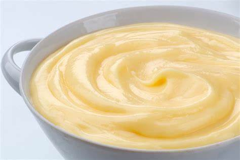
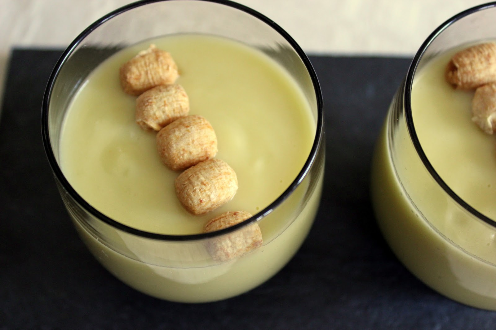
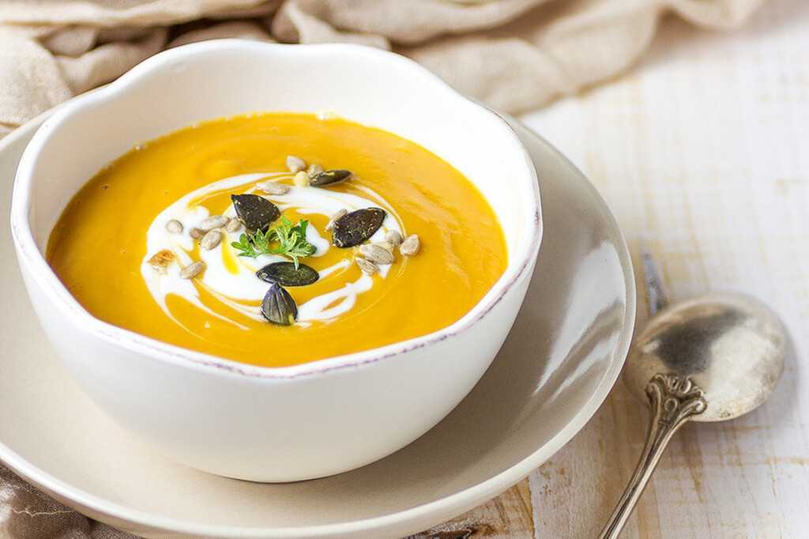

La crema (galicismo de crème) es una familia de preparaciones de consistencia cremosa.
Comúnmente se refiere a un postre o a una salsa de postre, pero también puede
prepararse para usarla en comidas saladas. Estas se elaboran a partir de leche y huevos
fundamentalmente y se espesan con calor. Tambien se denomina también crema a un tipo de
sopas elaboradas a partir de un roux. Estas se comercializan en forma de cremas instantáneas
o precocinadas, aunque no son auténticas si no se han espesado con huevo.
Como postre, se hace a partir de una combinación de leche (o crema de leche),
yema de huevo, azúcar y saborizantes como vainilla y canela. Para dar más
consistencia a la crema se añade harina, maicena o gelatina.
UN POCO DE HISTORIA
En la cocina francesa, el término crème significa crema de leche o nata,
por lo que es siempre necesario añadir otra palabra que precise su uso.
En repostería, se distinguen dos tipos de crema básica cuyo cuajado se
obtiene con yema de huevo.
Entre las variantes más conocidas de la crema pastelera podemos encontrar
diversas cremas españolas en las que varían los aromas, las proporciones
de leche, huevo y harina así como la consistencia final más o menos cuajada.

El origen de las cremas se puede rastrear hasta la época medieval en Europa,
donde se preparaban como parte de banquetes y festines reales. Inicialmente,
las cremas eran consideradas un manjar exclusivo, reservado para la nobleza
y la alta sociedad. Se elaboraban con ingredientes finos como aves de corral,
hierbas aromáticas y especias exóticas, lo que las convertía en una muestra
de lujo y sofisticación culinaria.
Con el paso del tiempo, las cremas se popularizaron y se adaptaron a los ingredientes
disponibles en cada región. En la cocina francesa, por ejemplo, surgieron las renombradas
"crèmes", como la vichyssoise o el bisque, que se convirtieron en referentes de la alta
cocina internacional.

Durante el siglo XX, con el auge de la gastronomía moderna y la difusión
de técnicas culinarias refinadas, las cremas adquirieron un estatus aún
más relevante. Los chefs innovadores experimentaron con nuevos sabores
y presentaciones, llevando las cremas a un nivel de sofisticación sin precedentes.
En la actualidad, las cremas siguen siendo un elemento fundamental
en la gastronomía mundial. Se han adaptado a las tendencias contemporáneas,
incluyendo opciones vegetarianas, veganas y saludables que reflejan
la diversidad cultural y el interés por una alimentación equilibrada.